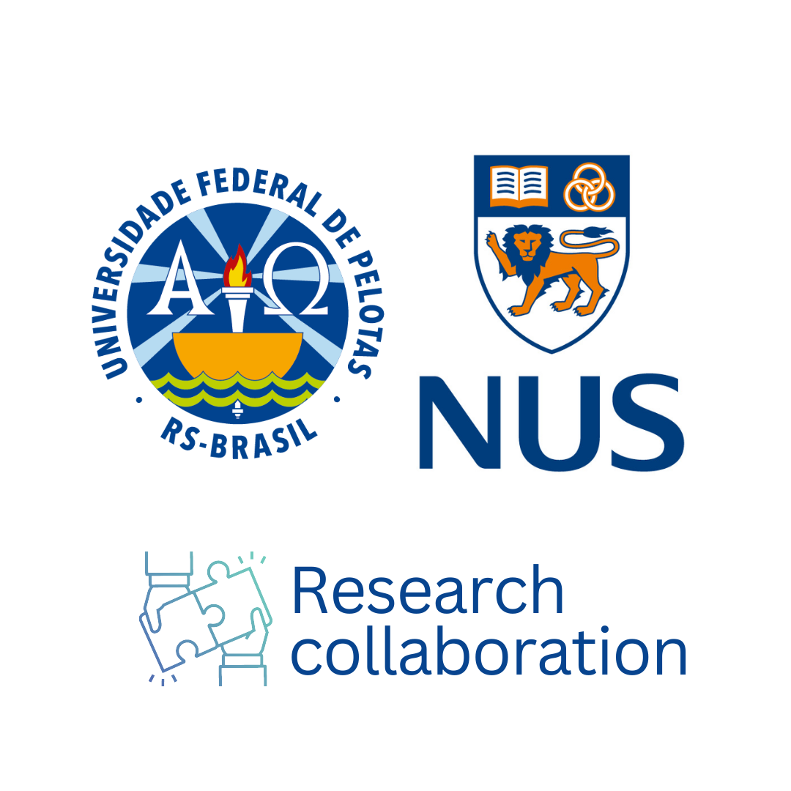

NUS and UFPEL secure grants for a One Health research collaboration
A Singapore–Brazil partnership opens new avenues for research at the intersection of oral health, systemic disease, and environmental science.

The National University of Singapore and the Universidade Federal de Pelotas (UFPEL), Brazil, have been awarded research grants to advance a One Health collaboration. The initiative — involving researchers from the NUS Faculty of Dentistry and dental schools in Pelotas — is focused on bridging oral health research with broader systemic and environmental health perspectives, a hallmark of the One Health framework.
One Health recognises the interconnection between human, animal, and environmental health. In the context of dental research, it opens pathways to study oral microbiome dynamics in relation to systemic conditions, the use of biomaterials under environmentally sustainable principles, and cross-species insights into tissue regeneration. A/P Rosa has cultivated research ties between NUS and UFPEL over several years, making this collaboration a natural evolution of an established partnership.
Connecting oral health research to the broader web of life, systemic disease, and environment.
UFPEL’s school of dentistry is one of Brazil’s leading research-intensive dental institutions, with a strong track record in evidence-based dentistry and community oral health. The NUS–UFPEL collaboration reflects the international dimension of A/P Rosa’s research programme and reinforces Singapore’s connections to emerging dental research communities in South America. A/P Rosa was originally trained in Brazil before joining NUS, and he has maintained active ties to Brazilian dental research throughout his career.